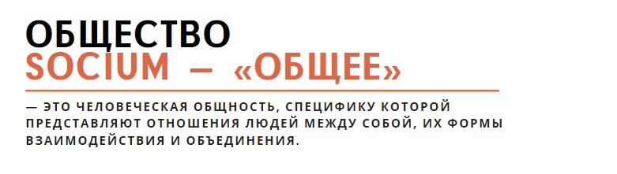
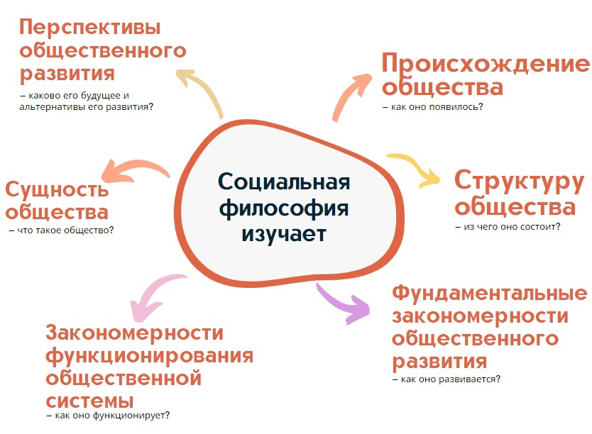
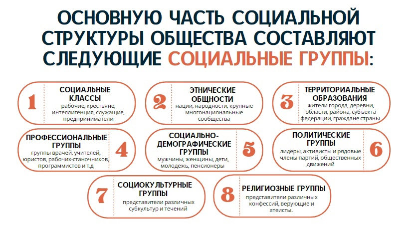
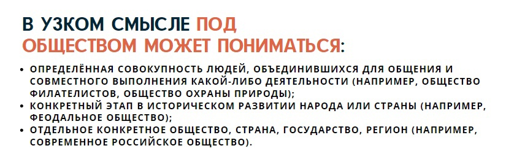
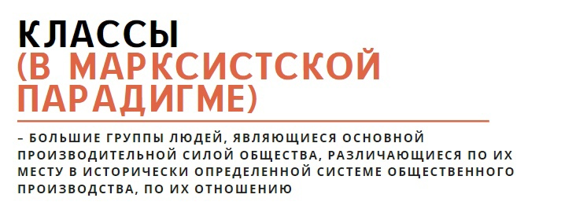
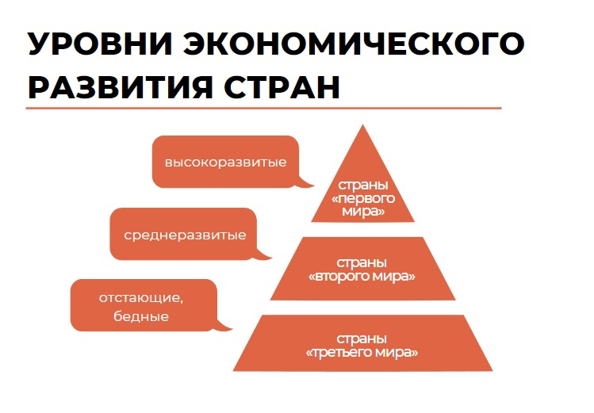
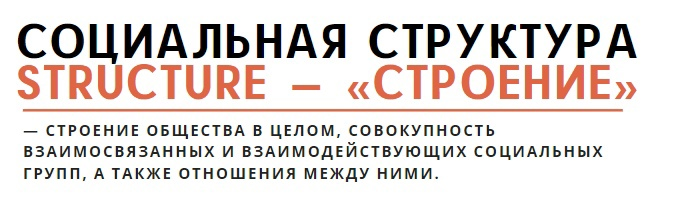
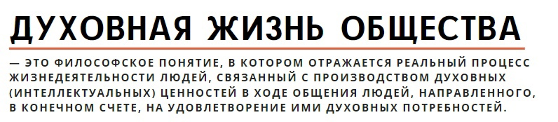
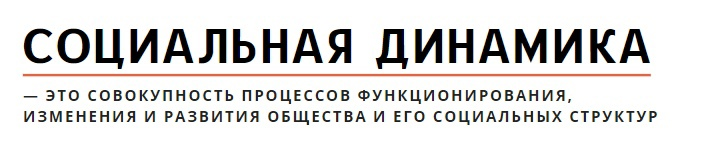

18. Социальная философия, ее предмет и проблемы. Эволюция представлений об обществе в истории философии
Объектом изучения социальной философии является общество.
Общество (социум) – продукт целенаправленной и разумно организованной совместной деятельности больших и малых групп людей, объединенных различными связями и отношениями, потребностями и интересами.
Социальная философия – раздел философии, который изучает предельные основания общества как целостного явления, закономерности и особенности его функционирования.
- Целостность (коллективы, общности, группы сохраняют свое единство на протяжении длительного времени, несмотря на сменяемость поколений)
- Самоорганизуемость (саморегуляция, самоуправление, определение целей и постановка задач совместной деятельности происходит внутри общества)
- Динамичность (варитивность, пластичность, способность изменяться, регрессировать либо эволюционировать к более сложным формам в процессе истории)
- Закономерность (функционирует в рамках определенных закономерностей, при учете объективных и субъективных факторов, объективные: природные условия, наличие/отсутствие ресурсов, международная обстановка и т.д., субъективные: работа конкретных политических деятелей и т.д.)
- Институциональность (создание системы социальных организаций и институтов, упорядочивающих социальные связи)
Основная проблема - человек и общество
Становление социальной философии как относительно самостоятельной философской дисциплины пришлось на эпоху Возрождения и Нового времени и было связано с постижением сущности государственной власти и ее связей с жизнью обычных людей в трудах Н. Макиавелли; с теорией естественного права Т. Гоббса, Дж. Локка и Б. Спинозы; исследованием проблемы соотношения социума и государства, общества и природы Дж. Локком и Ш. Монтескье. Заметный вклад в формирование социальной философии Нового времени внесла немецкая классическая философия, особенно в исследовании предельных оснований бытия человека (И. Кант), права, нравственности и морали (Г. Гегель). Важный вклад в развитие современной социальной философии внесла концепция материалистического понимания истории К. Маркса.
Над вопросами общественной жизни рассуждали еще философы глубокой древности. Например, Платон в эпоху Античности создал свою знаменитую утопическую модель «идеального государства» (высшая ступень – философы, т.к. они мудры и не алчны, средняя ступень – воины, т.к. они бесстрашны, защищают государство от внутренних и внешних угроз, низшая ступень – купцы, ремесленники и производители всех мастей, простолюдины, т.к. они алчны, склонны к накопительству, эгоистичны и живут только интересами сегодняшнего дня, неспособны мыслить «по-государственному», т.е. на далекую перспективу). Также в Античности о правильных и неправильных формах государственного устройства (см. соотв. пункт) рассуждал Аристотель.
Аристотель считал, что наилучшей формой власти явл. Монархия. Монархия может превратится в тоталитаризм, когда монарх заботится только о своих интересах. В средние века выработалась концепция о церкви. Церковь – это град небесный на Земле (по Августину), а град земной образуют люди, кот. на первое место ставят плотские удовольствия. В новое время формируется представление, объясняющее существование общества естественными причинами. Мыслители нового времени – Н. Макиавелли, Спиноза. В концепциях общества есть различия. Одни философы считали, что люди раньше боролись между собой и, чтобы не уничтожить друг друга, они объединились в общество. Возникли и другие концепции: общество понимается как определ. живой организм, в кот. правительство выполняет функции разума. У Гегеля эта закономерность связана с развитием мирового разума. Возрастает степень свободы людей. На основе этих концепций сформировалась марксовская концепция развития социума. У Маркса общество развивается с помощью опр. матер. предпосылок: труд. деятельность; общ. бытие явл. первичным по отнош. к общественному сознанию. Общ. бытие – процесс жизни общества, ядром этого явл. производственные отношения, кот. складываются между людьми в процессе производства. Совокупность произ. отношений составляет эконом. основу общества. Способ производства – это неразрывное единство произв. сил и произв. отношений. Маркс выделяет эконом. и производ. отношения, как главные. Маркс считал, капитализм – последнее антогонистическая форма устройства общества, кот. должна сменится коммунизмом.
В Средневековье исследования вопросов общественной жизни осуществлялись через призму религиозного сознания, власть была разделена на светскую («его величество») и духовную («его преосвященство»), которые поддерживали друг друга. Церковь посвящала руководителя государства в сан «наместника Бога на земле», в свою очередь король выделял церкви земли и собственность, устанавливал в ее пользу соответствующие налоги.
В эпоху Возрождения и Нового времени происходит дальнейшее исследование сущности государственной власти и ее связей с реальной жизнью во всех ее даже самых неидеальных проявлениях в трудах Н. Макиавелли (в политике «цель всегда оправдывает средства»); с теорией естественного права Т. Гоббса, Дж. Локка и Б. Спинозы (человек имеет ряд естественных, т.е обусловленных уже самим фактом его появления прав, свобод, которые общество и государство должны учитывать); исследованием проблемы соотношения социума и государства, общества и природы Дж. Локком и Ш. Монтескье. Заметный вклад в формирование социальной философии Нового времени внесла немецкая классическая философия, особенно в исследовании предельных оснований бытия человека (И. Кант, «категорический императив»), права, нравственности и морали (Г. Гегель). Важный вклад в развитие современной социальной философии внесла концепция материалистического понимания истории К. Маркса. На сегодняшний день актуальным вопросом является дальнейший поиск и развитие оптимальных форм организации совместной жизни людей на основе принципов справедливости и разумности, т.к. даже такая ценнейшая форма организации общественной жизни как демократия с ее неоспоримой идеей прав человека дискредитировала себя в ХХ веке, т.к. стала поводом для политических манипуляций, подтасовки и оспаривания результатов голосования, борьбой с оппозицией, формирования выгодного общественного мнения средствами СМИ и другим деструктивными проявлениями во многих странах мира, в том числе в странах т.н. «зрелой демократии» (страны Европы, США).
19. Общество как система. Основные сферы жизнедеятельности общества
Существует много определений понятия «общество». В узком смысле под обществом может пониматься как определенная группа людей, объединившихся для общения и совместного выполнения какой-либо деятельности, так и конкретный этап в историческом развитии народа или страны.
- Основные сферы общественной жизни:
- Экономическая (материальная, производственная): предприятия, заводы, фирмы, банки, организации, обеспечивающие производство товаров и услуг + производственные отношения (отношения в процессе труда).
- Политическая: государство и органы управления, политические партии, общественные объединения, профсоюзы, представительства международных политических организаций и т.д. Сфера принятия стратегических управленческих решений.
- Социальная: нации, народности, классы (рабочие, крестьяне, интеллигенция, служащие, предприниматели), половозрастные группы (мужчины, женщины, молодежь, пенсионеры, дети), группы по интересам (любители кино, рок-музыки, коллекционеры и т.д.) – множество больших и малых социальных групп.
- Духовная (культурная): наука, образование, религия, философия, право, мораль, искусство, идеология, философия и т.д. Существуют дискуссии по поводу того, какая из сфер является главной. По всей видимости важны все, но вслед за марксистской философией, которая была основой социогуманитарного познания в отечественной научно-исследовательской школе в ХХ веке чаще всего доминирующей признается экономическая, т.к. благодаря ей получают продолжение все последующие. Т.е. без труда и производства человек не существует. чтобы появилось начало общества он должен что-то сделать и обменяться с другими результатами своего труда. Тогда далее есть смысл в появлении и укреплении государства, тогда далее естественным образом выделяются различные группы людей по разным признакам производства (рабочие, крестьяне, интеллигенция, служащие, предприниматели) и по разным социальным нуждам (молодежь, пенсионеры, дети, пенсионеры, активное работающее население) и далее в процессе такого всеобщего обмена формируются и укрепляются духовные ценности культуры (духовная сфера) – что такое честность, справедливость, ценности общества, правила поведения, знания о мире, о природе, наука и т.д. – что затем уже снова начинает влиять на способ производства и отношения в рамках этого производства. Таким образом, круг замыкается и все начинается снова уже на новом уровне осознанности происходящего.
Итак, мы выделили четыре главные сферы современного общества. Они тесно связаны между собой и влияют друг на друга. К примеру, если экономика страны не выполняет своих задач, не обеспечивает население достаточным количеством товаров и услуг, не расширяет количество рабочих мест, то уровень жизни резко снижается, не хватает денег на выплату зарплаты и пенсий, появляется безработица, растет преступность. Иными словами, успехи в одной, экономической, сфере влияют на благополучие в другой, социальной. Экономика влияет и на политику. Когда в начале 90-х годов экономические реформы в России привели к резкому расслоению населения, т.е. появлению на одном полюсе очень богатых людей, а на другом — очень бедных, более активными стали политические партии, ориентировавшиеся на коммунистическую идеологию.
20. Материально-экономические основы жизнедеятельности общества. Стратегия социально-экономического развития Республики Беларусь
Согласно марксизму (или, как его еще называют, историческому либо диалектическому материализму) человек, в своей сущности есть то (т.е. может быть сравним с тем), что он производит и как он это производит. Иными словами, производство определяет его уровень исторического развития. Человек эволюционировал благодаря совершенствованию своего труда, поэтому материально-экономическая сфера жизни общества является (скорее всего, де-факто) главенствующей и по сей день.
Естественно, способ производства зависит от конкретного этапа истории человечества и он уже не раз менялся (например, смена первобытного собирательства и охоты на рабовладение, затем на феодализмом, затем на капитализм и т.д.) и поэтому мы вправе ждать в будущем тоже каких-то новых изменений (замена капитализма, например, технократизмом).
Классы (в марксистской парадигме) – большие группы людей, являющиеся основной производительной силой общества, различающиеся по их месту в исторически определенной системе общественного производства, по их отношению (большей частью закрепленному и оформленному в законах) к средствам производства, по их роли в общественной организации труда, а, следовательно, по способам получения и размерам той доли общественного богатства, которой они располагают. В этом смысле производство будет теснейшим образом связано с управлением и распределением материальных благ в обществе. Т.е. там, где появляется производство (или тогда, когда появляется производство) сразу же появляется и управление и распределение благ. Опираясь на марксистскую парадигму, однако, отметим, что существуют и другие модели описания материально-экономической сферы общества (кейнсианство, экологическая («зеленая»), бюрократическая, феминистская и др.), каждая из в чем-то ограничена, схематична в сравнении с действительной жизнью. И ни одна из них не может претендовать на монопольное владение истиной.
Говоря об управленческой парадигме экономикой XXI века, можно сделать вывод, что различные системы управления материально-экономической сферой имеют право на существование, если они конкурентоспособны и тесно связаны с особенностями национальной культуры. Каждая страна, государство - это набор собственных традиций и особенностей, их пути развития уникальны. Понимание того, как управлять эффективно экономикой для всех стран и обществ происходило в различных исторических условиях. На сегодняшний день выделяют (очень обобщенно) три модели менеджмента в материально-экономической сфере: западную (куда входит США и европейские страны), азиатскую (Япония, Корея, Китай) и евразийскую (главный лидер – Россия). Каждая модель менеджмента формировалась на основе собственной модели экономического развития.
По уровням экономического развития все страны мира иногда принято делить на: страны «первого мира» (высокоразвитые), страны «второго мира» (среднеразвитые) и страны «третьего мира» (отстающие, бедные). Актуален на сегодняшний день и вопрос о том, что вышеуказанная градация стран мира по уровню экономического благополучия сложилась как результат колониальной экспансии стран Европы в эпоху Нового времени (16-19 вв.) в другие регионы мира и последующей работорговли, нещадного использования природных ресурсов колониальных стран, что имело негативные последствия и привело к неравным условиям экономического развития стран мира и, как следствие, появлению беднейших стран мира. Почти все самые бедные страны мира – это страны Африки, расположенные к югу от Сахары. Эти страны погрязли в политических и военных конфликтах. Кроме того, их экономика по большей части завязана на сельском хозяйстве и добыче природных ископаемых в обмен на дорогие товары первой необходимости, которые внутри этих стран не производятся. Многие страны очень зависимы от иностранной помощи, а такая зависимость подрывает возможность экономического развития. Однако не все так просто с этими странами. Так, в Иране, например, расположены третьи крупнейшие в мире запасы нефти, тем не менее, он совсем не относится к одной из самых богатых стран мира. А вот Южная Корея или, например, Япония, в которых практически нет никаких ресурсов, стали одними из относительно богатых стран на сегодняшний день благодаря развитию прежде всего человеческого капитала (интеллекта).
Стратегия социально-экономического развития Республики Беларусь связана с реализацией социально-ориентированной внутренней политики (приоритет поддержке различных групп населения даже при небольшом некритическом ущербе при этом общему экономическом развитию страны, накопление капитала не самоцель), реализация рыночной модели хозяйствования (свободные рыночные отношения, капитализм) с наличием сильной регулирующей функции государства, обеспечение равномерности социального развития и недопущения чрезмерной социальной дифференциации различных групп населения (недопущение критического разделения на «очень богатых» и «очень бедных»), которое чревато социальными потрясениями, революциями, обеспечение максимальной занятости населения, т.е. максимального количества людей работой (даже при небольшой заработной плате), поддержка образования, здравоохранения, спорта, как инвестиций в человеческий капитал (позволяют получить новое более высокое качество и уровень развития человека, как члена общества).
21. Понятие и типология социальной структуры. Социальные и демографические проблемы Республики Беларусь
Социальная структура общества – это устойчивая совокупность его элементов, а также связей и отношений, в которые вступают группы и общности людей по поводу условий их жизнедеятельности. Структура общества представлена сложной взаимосвязанной системой статусов и ролей. Хотя социальная структура образуется посредством функционирования социальных институтов, это не вся социальная организация, а лишь ее форма. В основе социальной структуры лежат общественное разделение труда, отношения собственности, а также другие факторы социального неравенства. Преимущества общественного неравенства состоят в возможностях профессиональной специализации и предпосылках для роста производительности труда. Недостатки социального неравенства связаны с социальными конфликтами, которые оно порождает. Эмпирическим показателем социального неравенства служит децильный коэффициент дифференциации доходов, или отношение доходов 10 % самых богатых к доходам 10 % самых бедных групп общества. В высокоразвитых индустриальных странах он колеблется в пределах от 4 до 8. Сегодня в Беларуси он находится в пределах 5,6-5,9. Для сравнения: в Казахстане децильный коэффициент составляет 7,4, в Украине - 8,7, в Польше - 16,5, в России - 16,8.
Исходным элементом социальной структуры общества как целостной системы являются человек и многообразные социальные общности, в которых люди объединены родственными, хозяйственными, этническими, религиозными, политическими и прочими связями. Интеграция и координация действий множества людей и различного рода групп осуществляется через социальные институты.
Понятие «социальная структура» отражает социальное неравенство в во всех его проявлениях, а понятие «социальная стратификация» - только в вертикальном срезе.
- Социальные классы, слои – рабочие, крестьяне, интеллигенция, служащие, предприниматели т.д.
- Этнические общности – нации, народности, крупные многонациональные сообщества.
- Территориальные образования – жители города, деревни, области, района, субъекта федерации, граждане страны в целом.
- Профессиональные группы - группы врачей, учителей, юристов, рабочих-станочников, программистов, представителей творческих профессий и т.д.
- Социально-демографические группы (половозрастные) – мужчины, женщины, дети, молодежь, пенсионеры и т.д.
- Политические группы – лидеры, активисты и рядовые члены партий, общественных движений, соучаствующие в их деятельности (сторонники).
- Социокультурные группы - любители кино, рок-музыки, коллекционеры, представители различных субкультур, течений и направлений культуры.
Общество – структурно сложная (неоднородная) социальная система, включающая в себя множество элементов. Важнейшая составляющая социальной структуры – социальные группы – относительно устойчивые внутренние образования (модели, способы) для взаимодействия индивидов друг с другом внутри общества в течении длительного времени. Соц. группа – это не столько люди (количество людей), сколько совокупность (качество) взаимосвязей между ними, которые складываются на основе общих интересов, потребностей в процессе совместной деятельности (труда). Т.е страны могут быть большие (где много людей), но плохо организованные внутри и потому среднеразвитые (напр., Россия, Индия, Бразилия) и небольшие страны, где населения значительно меньше (Европейские страны, Южная Корея, Япония, Сингапур), но качество взаимодействия внутри и управления эффективнее.
В марксистской теории классы – это большие группы людей, которые различаются: - по месту в исторически определенной системе общественного производства; - по отношению к средствам производства (большей частью, закрепленному и оформленному в законах); - по роли в общественной организации труда; - по способам получения и размерам той доли общественного богатства, которой они располагают.
- Классы не существуют вечно, их возникновение связано с процессом развития производства.
- В результате развития процесса общественного разделения труда и роста его производительности, товарного обмена создается избыточный продукт, который присваивается определенной частью общества
- Классы – это большие группы людей, различающиеся по:
- их месту в исторически определенной системе общественного производства;
- отношению к средствам производства;
- роли в общественной организации труда;
- способам получения и размерах доли общественного богатства.
- Отношения классов рассматриваются как отношения классовой борьбы, призванной установить диктатуру пролетариата.
- Будущее развитие общества, связанное с построением коммунизма, характеризуется стиранием классовых различий и формированием социально однородного общества, в котором отсутствует борьба вокруг частной собственности и денег.
Социальные и демографические проблемы Республики Беларусь в настоящее время главным образом связаны с преодолением последствий экономического кризиса 90-х гг. прошлого века («демографическая яма», критический спад рождаемости в период экономического кризиса) и существующей теперь необходимостью проведения пенсионной реформы (увеличение возраста выхода на пенсию), т.к. появился серьезный дисбаланс между трудоспособным и нетрудоспособным населением, а также преодолением последствий (значимость постепенно уменьшается) последствий Чернобыльской катастрофы (переселенцы, появление значительного количества лиц с льготами, нуждающихся в социальной поддержке), а также со стимулированием деторождаемости и государственной поддержкой семьи, материнства и детства (в Беларуси один из самых длительных в мире оплачиваемых декретных отпусков, программы обеспечения жильем многодетных семей, другие виды соц. поддержки и дотаций семей, имеющих детей).
22. Духовная сфера жизни общества. Общественное сознание и формы духовной культуры
Духовная жизнь общества – это философское понятие, в котором отражается реальный процесс жизнедеятельности людей, связанный с производством духовных (интеллектуальных) ценностей в ходе общения людей, направленного, в конечном счете, на удовлетворение ими духовных потребностей.
Духовная (культурная) сфера жизни общества: наука, образование, религия, философия, право, мораль, искусство, мода, идеология, философия и т.д.
Изучение духовно-нравственной жизни общества с необходимостью предполагает выделение ее структурных элементов. Такие элементы называют формами общественного сознания. К ним относят моральное, религиозное, политическое, научное, эстетическое сознание. Эти формы определяют соответствующие подсистемы духовной сферы общества, отличаясь друг от друга, не только содержанием и способом познания своего объекта, но также временем возникновения в процессе развития общества.
Исторически первой формой общественного сознания является моральное сознание, без которого не могло существовать человечество даже на самых ранних этапах своего развития, так как моральные нормы, отражающие базисные ценности общества являются важнейшими регуляторами и стабилизаторами любых социальных взаимосвязей. В условиях первобытного общества возникают еще две формы общественного сознания — эстетическое и религиозное. Считается, что религиозное сознание складывается позднее эстетического и, соответственно, морального, с чем, впрочем, спорят представители института религии, утверждая о первичности религии по отношению к морали и искусству. Далее, по мере развития общества, формируется политическое, затем — научное сознание. Безусловно, перечисленные формы не являются конечными и единственными. Развитие социальной системы продолжается, что приводит к возникновению в ней новых подсистем, требующих собственного осмысления и, следовательно, порождающих новые формы духовной сферы общества.
С точки зрения реализации жизненных потребностей (см. пирамида потребностей по А. Маслоу) после удовлетворения физических (витальных) потребностей человек неминуемо реализует духовные потребности, которые являются потребностями более высокого порядка (др. греч. «Вначале кушать, потом философствовать»).
- Духовное производство – это особого рода деятельность людей, направленная на познание явлений природы и общества, на создание частных, общих и всеобщих представлений, идей, теорий о мире.
- Духовное общение – это процесс коммуникативных связей между людьми в системе образования и воспитания, в системе производства и воспроизводства и передачи информации (радио, печать, телевидение, кино, театр и другие зрелищные мероприятия)
- Духовные потребности – есть не что иное, как мотивы человеческой деятельности, побуждающие к духовному процессу и творчеству, детерминируемые, в конечном счете, интересами людей. Таким образом, духовная жизнь общества – это жизнедеятельность людей, связанная с удовлетворением духовных потребностей (т.е. потребностей души и ума, в отличие от потребностей тела) в процессе их производства и общения. Ее ядром (ядром духовной жизни) и составной частью является общественное сознание. Общественное сознание есть особая, внутри себя организованная социальная реальность, отражающая в себе объективно – всеобщие и универсальные взаимозависимости и механизмы социокультурной деятельности людей.
Выделяют следующие формы общественного сознания: политическое сознание, правовое сознание, нравственное сознание, эстетическое сознание, религиозное и атеистическое сознание, естественно-научное сознание, экономическое сознание, экологическое сознание.
Основными формами духовной жизни общества являются: мораль, право, религия, наука, искусство, идеология.
23. Общество как саморазвивающаяся система. Диалектика спонтанности и целеполагания
Развитие общества называется социодинамикой (т.е рассмотрение общества в динамике, в развитии), т.к. оно есть реальность человеческих отношений, которая постоянно изменяется, движется, постоянно происходят какие-то события. В этом плане общество есть, как уже отмечалось, прежде всего, отношения между людьми, а не сами люди, как это ни парадоксально. Потому что кроме самих людей требуется их взаимодействие (если они, например, разобщены, в состоянии конфликта, говорят на разных языках, исповедуют разные ценности или просто не взаимодействуют никак между собой и т.д., то состояния общества не возникнет).
Одним из предметов социальной философии истории является изучение предельных оснований, наиболее общих закономерностей социодинамики. Источники саморазвития общества можно усмотреть во взаимодействии трех сфер реальности, трех «миров», не сводимых друг к другу. Во-первых, это мир природы и вещей, существующий независимо от воли и сознания человека, т. е. объективный и подчиненный физическим законам. Во-вторых, это мир общественного бытия вещей и предметов, являющихся продуктом человеческой деятельности, прежде всего труда. Третий мир – человеческая субъективность, духовные сущности идеи, которые относительно независимы от внешнего мира и обладают максимальной степенью свободы. Как общество развивается? Абсолютно точно мы не знаем, несмотря на то, что это звучит очень странно. Но можно точно сказать, что на деле такое развитие есть результат диалектики спонтанности и целеполагания (диалектика – учение о единстве и борьбе противоположностей), т.е. в жизни мы каждый в отдельности и все вместе что-то планируем, ставим какие-то дели, но они никогда в точности не реализуются, потому что есть еще фактор спонтанности (случайности, отклонений), который постоянно корректирует наши планы и цели. Отсюда философов всегда интересовал вопрос, а кто же тогда управляет историей – человек или сама история? Мы уже говорили, что развитие общества это всегда синтез объективных и субъективных факторов и точно сказать чего больше пока не может никто, т.к. количество «переменных», входящих в такую «формулу» исторического процесса слишком велико.
Общественно-экономическая формация – исторически определенный тип общества и его развития, возникший на базе определенного способа производства материальных благ. (К.Маркс). В рамках марксистской философии истории были выделены пять классово антагонистических общественно-экономических формации – первобытнообщинная, рабовладельческая, феодальная, капиталистическая и одна бесклассовая – коммунистическая. Согласно формационному пониманию общества, социальные отношения, основанные на господстве частной собственности, порождают антагонизмы (противоречия), связанные с классовой борьбой, что, в конечном итоге, должно завершиться уничтожением частной собственности и построением бесклассового общества, в котором отсутствуют социальные различия между людьми, делами которой управляет не государство, а непосредственно сами люди. СССР как попытка реализации формационной парадигмы потерпел крах и является относительной утопией, потому что все же попытка была, а во-вторых, потому, что формационная модель все еще продолжает реализовываться в частности Китаем и пока довольно успешно, как синтез марксизма и эффективных западных практик экономического развития.
24. Философия социального действия. Современные концепции социальной динамики
Суть общества во взаимодействиях и действиях членов общества. Поэтому вопрос о том, что такое социальное действие оказался очень важен для социальных философов.
- производственные
- соц-политические
- коммуникативно-идеологические
- познавательные
- исследовательские
- учебные
- информационные
Социальная динамика - это совокупность процессов функционирования, изменения и развития общества и его социальных структур
- целерациональный (делаю, потому что это действие с точки зрения рационального понимания и «здравого смысла»)
- ценностно-рациональный (делаю, потому что «так надо»)
- традиционный (делаю. потому что до меня так все делали)
- аффективный (делаю, потому что так чувствую сейчас)
Во всей истории Вебер видит процесс нарастания рационализации, "расколдовывания" мира как освобождения чел-ка от суеверий и предрассудков.
Механизмом реализации социодинамики является переход количественных изменений различных элементов социального организма по отдельности и данного организма в целом в качественные; единство эволюционных, по преимуществу, количественных изменений и революций в общественной жизни, т.е. коренных качественных изменений характера социальной системы. Направление социодинамики определяется преемственностью исторического процесса, его новациями, по необходимости, однако, связанными с возвратами периодически к старому («Все новое это хорошо забытое старое»).